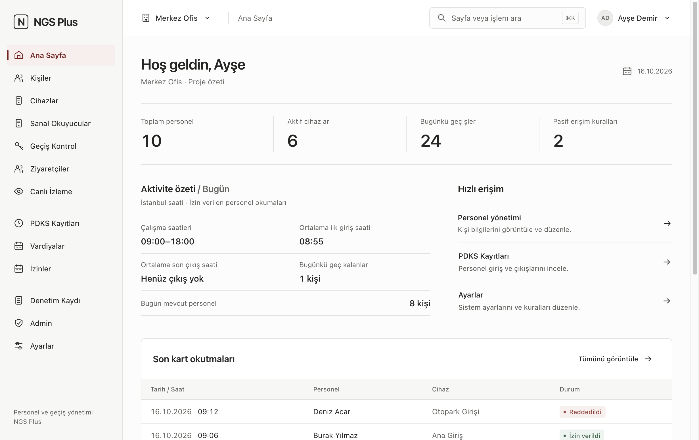
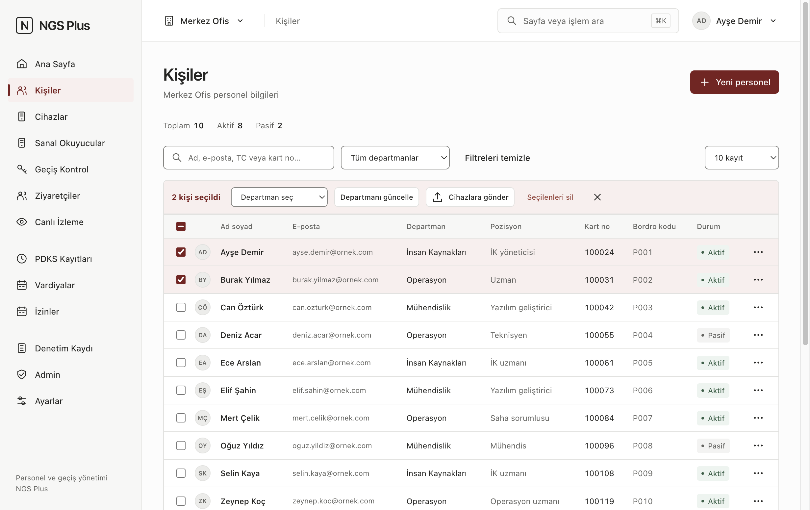
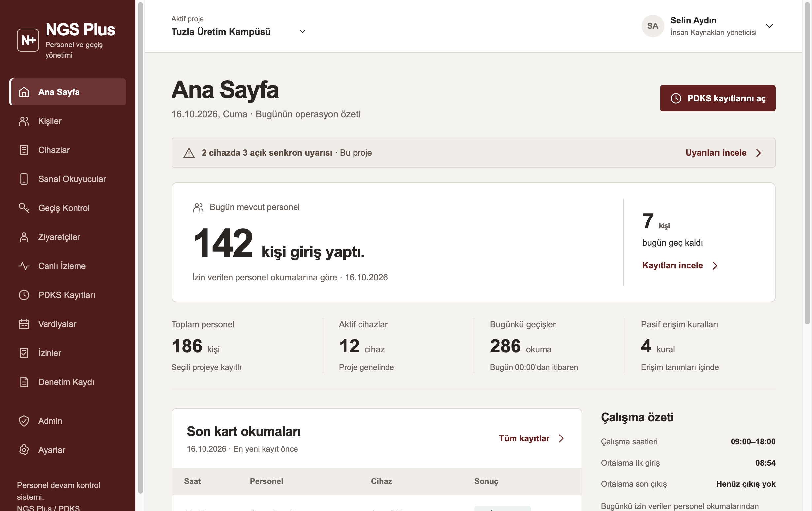
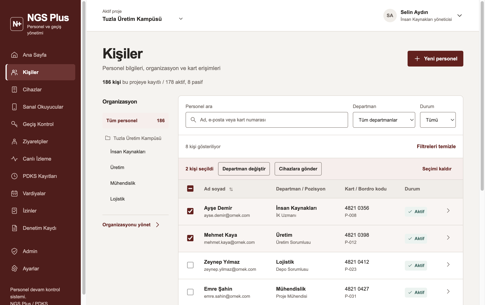

Yeni arayüz — 3 yön
Her yönün Ana Sayfa ve Kişiler mockup'ı. Büyük görmek için "aç" bağlantılarına tıkla (canlı HTML; filtre/seçim çalışır).
A — Sade nötr
Açık sidebar, bordo yalnız aksiyon/aktif öğede, ⌘K arama, kartsız düz KPI'lar


Ana Sayfa açKişiler açNotlar
B — Bordo marka
Koyu bordo sidebar korunur, sıcak açık zemin, "bugün mevcut" ana metrik, uyarı bandı


Ana Sayfa açKişiler açNotlar